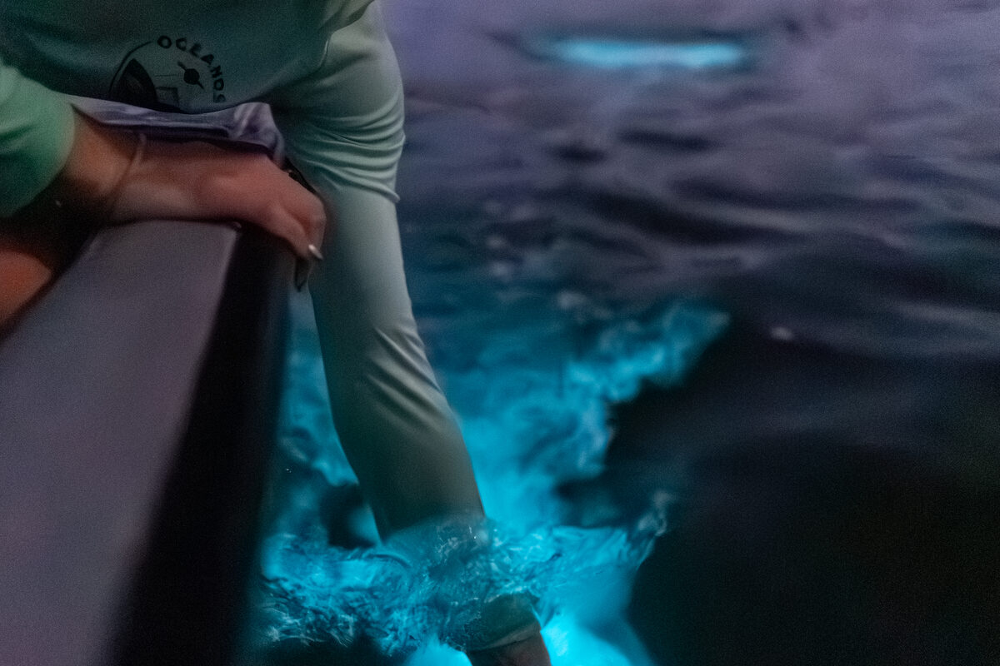

Mosquito Bay: Vieques and Its Legendary Bioluminescent Waters

Paddle your hand through the water on a moonless night at Mosquito Bay and it trails blue-green fire. Stir it with a paddle and the whole surface erupts in cold light. This is one of the most unusual natural experiences on Earth, and it happens every night on the southern shore of Vieques Island, just off Puerto Rico's east coast.
What the Scientists Measure
Mosquito Bay is often cited as the world's brightest bioluminescent bay. The claim comes from measurements of dinoflagellate concentration — specifically Pyrodinium bahamense, a single-celled organism that produces a flash of light when mechanically disturbed. In ideal conditions, Mosquito Bay can hold hundreds of thousands of these organisms per gallon of water, a density that produces visible light with even the lightest touch.
The bay's extraordinary concentration exists because of geography. Mosquito Bay is almost completely enclosed, with a narrow channel connecting it to the sea. That restricted flow keeps the dinoflagellates from washing out. The surrounding red mangrove forest enriches the water with nutrients through decaying leaves. The result is a self-sustaining engine of bioluminescence that has been running for as long as anyone on Vieques can remember.
Book it: tours near Vieques
Guided Clear Bottom Kayak Bio Bay Tour (Melaya's Tours)
Company: Melaya's Tours · Location: Vieques · From: $70
Check Availability →Vieques Bio Bay Kayak Tour — from mainland Puerto Rico (Fun Cat PR)
Company: Fun Cat PR · Location: Fajardo · From: $195
Check Availability →Clear-Bottom Kayaking Bio Bay Tours (Mosquito Bio Bay Tours)
Company: Mosquito Bio Bay Tours · Location: Vieques · From: $65
Check Availability →The 2017 Blow and the Recovery
Hurricane Maria hit Puerto Rico in September 2017 and devastated Mosquito Bay. The storm flushed out much of the dinoflagellate population and deposited debris throughout the mangroves. For months after the hurricane, visitors reported almost no glow. The recovery took years — not weeks — as populations slowly rebuilt. By the early 2020s the bay had largely returned to its pre-storm brightness, a resilience that matched what scientists had observed elsewhere: given time and a functioning mangrove fringe, these bays recover.
How to See It
Motorized boats are not permitted in Mosquito Bay — the prop wash harms the dinoflagellates and any fuel spill would be catastrophic. Tours operate by kayak, and clear-bottom kayaks have become the standard option, letting you watch the glow beneath the hull as you paddle. The experience runs entirely after dark on guided tours departing from Vieques.
Timing matters more here than at any other bio bay in Puerto Rico. Moonlight dilutes the glow the way a flashlight washes out stars — on a full moon night, the bay produces light but you can barely see it against the silvery water. Go within three or four nights of the new moon and the darkness is total, the bioluminescence startling. Most experienced guides will tell you the new moon window is not optional; it is half the experience.
Mosquito Bay vs the Other Puerto Rico Bays
Puerto Rico has three bioluminescent bays: Laguna Grande in Fajardo, La Parguera in Lajas, and Mosquito Bay in Vieques. Laguna Grande is closest to San Juan and the easiest to reach. La Parguera on the west coast allows motorized boat tours. Mosquito Bay requires the extra travel — a ferry or short flight to Vieques — and repays it. The combination of protected geography, intact mangroves, and restricted access has kept its dinoflagellate population at a consistently higher density than the mainland bays.
Frequently Asked Questions
What makes Mosquito Bay glow? Microscopic dinoflagellates called Pyrodinium bahamense emit a flash of blue-green light when disturbed by movement in the water.
When is the best time to visit Mosquito Bay? Moonless nights produce the most vivid glow. Aim for the week around the new moon. The bay is active year-round.
Related Reading
Book a bio bay kayak tour on Vieques
See Bio Bay Tours →